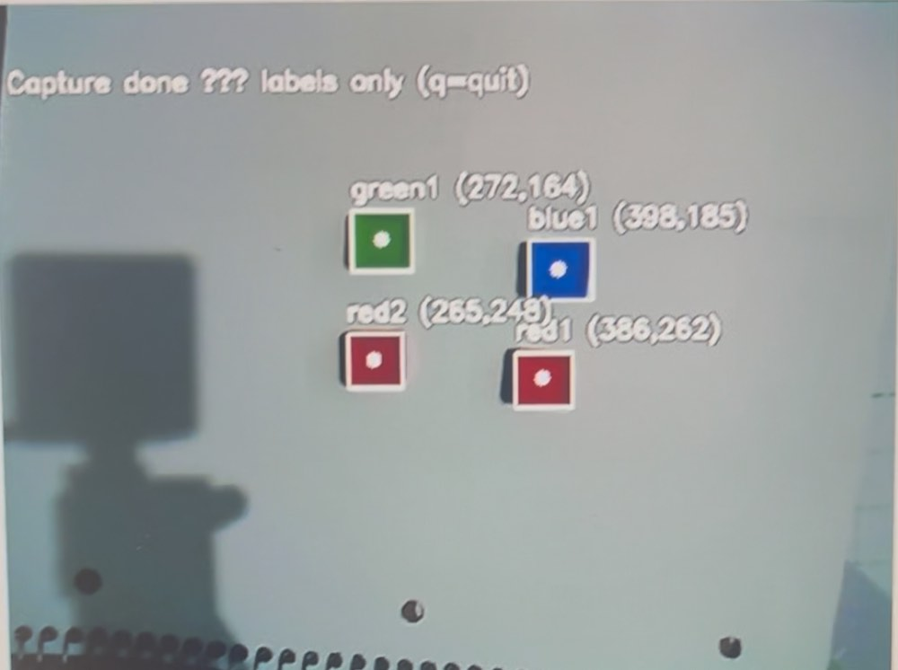

Course project · RAS 545 · Arizona State University · Spring 2026
LLM-driven pick and place with a 4-DOF manipulator
The task
Given a workspace of coloured blocks, a user types something like “place blue on top of green” or “move red to the left of blue”, and the system has to resolve the reference, work out where things are, and execute a multi-step manipulation. The interesting part is that the language model is not generating code or text for a human — it is the controller.
How function calling changes the architecture
Gemini is given a set of FunctionDeclaration schemas — each a name, a
description and typed parameters — and selects which to invoke from the conversation
context. The runtime dispatches the call, returns the result as a tool response, and the
model either issues further calls or answers. That turns the model from a text generator
into a reasoning agent in closed loop with hardware.
Five components hang off that loop:
- LLM controller — initialises the client, registers tool schemas, manages conversation history, dispatches calls.
- Tool dispatcher — maps emitted function names to Python implementations.
- Camera capture — runs HSV block detection, labels each block (
red1,blue2), saves an annotated frame plus JSON of labels and centroids. - Robot motion — connect, home, move to Cartesian poses, move to pixel-derived positions through the affine transform, drive the suction gripper.
- Pick and place — given source label, target label and placement type, computes safe approach heights and sequences the motion.
Perception
Blocks are found by converting each frame to HSV and applying per-colour masks for blue, green, yellow and red. Red needs two intervals because its hue wraps around the HSV cylinder — a standard trap worth stating explicitly. Masks get morphological opening and closing with a \(5\times5\) kernel, contours are filtered by area (\(A_{\min} = 500\) px²), and image moments give each centroid.

Geometry
Pixel centroids become robot coordinates through the same affine calibration developed in the maze project:
\[ \mathbf{M} = \begin{pmatrix} 6.007\times10^{-3} & -4.842\times10^{-1} & 3.807\times10^{2} \\ -4.691\times10^{-1} & 3.750\times10^{-3} & 1.553\times10^{2} \end{pmatrix} \]Heights are computed from the table contact height and block geometry rather than guessed: \(z_{\text{table}} = -45\) mm, safe travel height \(z_{\text{above}} = 100\) mm, block thickness \(h_{\text{block}} = 40\) mm, and \(\delta_{\text{stack}} = 10\) mm of clearance when stacking. So placing one block on another targets \(z = -45 + 80 + 10 = 45\) mm.
Results
Asked to “understand the scene”, the model called
move_to_home() to clear the camera's field of view, then
capture_scene_with_detection(), and summarised the blocks it found with
their pixel coordinates before asking what to move — the sequence the system prompt
specifies, chosen by the model rather than hard-coded.
Both manipulation classes worked. Stacking: “place blue1 on top of
green1” produced a pick_and_place_block call with
placement_type="on_top", and the arm picked, travelled at the safe height,
descended to the computed 45 mm stack height, released suction and retracted.
Lateral placement: “place red1 to the right of green1”
resolved the spatial reference and applied the corresponding offset.
What it demonstrates
- Function calling as a robot control interface, not just a text feature — the model chooses tools and sequences them.
- Natural-language spatial references (“on top of”, “to the right of”) resolved into calibrated metric offsets.
- Reuse of the hand–eye calibration from the maze project, so the geometry was solved once and shared.